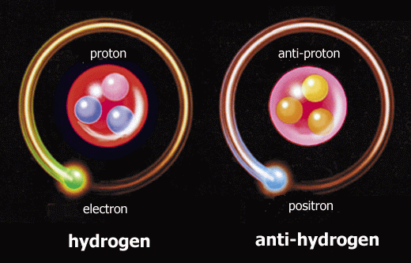
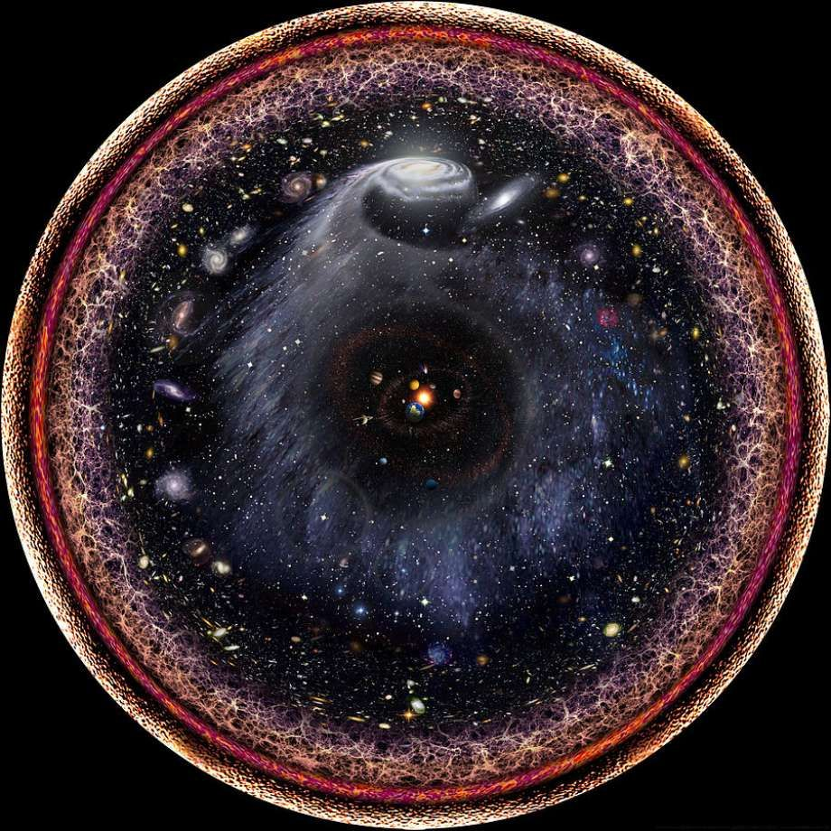
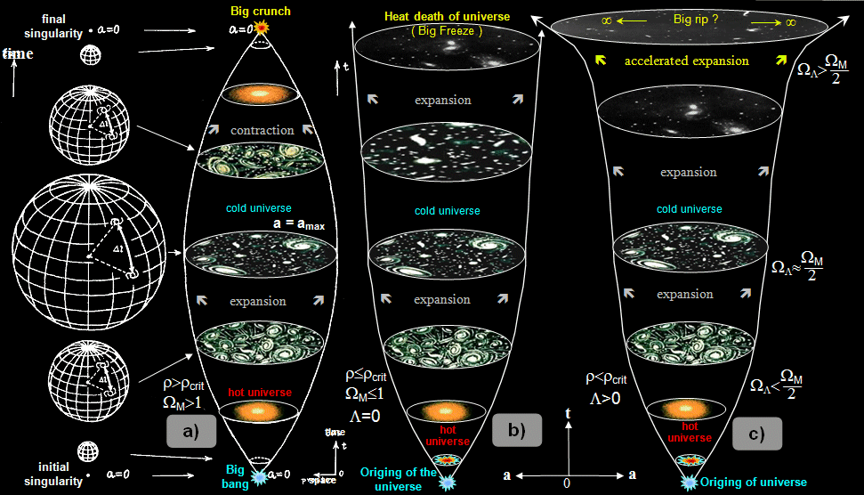

Înapoi acasă
Antimateria
Am înțeles de-acum că universul, adică tot ceea ce ne înconjoară, este alcătuit din materie. Cu toate acestea, în Univers există şi „antimaterie“, chiar dacă mult mai puțină. Antimateria este specială pentru că se anihilează cu materia obişnuită, printr-o explozie spectaculoasă care eliberează multă energie.
Antimateria este opusul în oglindă al materiei obişnuite. Astfel, fiecare particulă din univers îşi are antiparticula sa. Particula și antiparticula au aceeaşi energie şi masă pozitivă. Restul proprietăților, numite „sarcini", sunt opuse.
Atunci când o particulă se întâlneşte cu antiparticula sa, ele se anihilează reciproc, ca apa și focul. Anihilarea se produce printr-o explozie puternică, a cărei lumină eliberează toată energia conţinută în ele. Energia eliberată de câteva grame de materie și antimaterie care se anihilează este suficientă pentru a trimite o rachetă pe Lună.
Marginea universului observabil
Care este marginea universului? Dacă mergem tot înainte, unde ajungem? Astăzi nu ştim răspunsul, dar bănuim că există două situații posibile. În prima situație, universul este nemărginit: putem merge înainte și nu ne vom opri niciodată. În a doua situație, universul este „hipersferic", adică asemănător unei sfere. O furnică ce merge drept înainte pe o sferă, va da ocol sferei și se va întoarce în punctul de plecare. La fel și noi, dacă mergem tot înainte prin univers, ne vom întoarce în punctul de unde am pornit!
Omul a reuşit să cartografieze spațiul până la orizontul universului, estimat la aproximativ 16 miliarde de ani-lumină. Tot ceea ce se află dincolo de această limită este pierdut pe vecie, deoarece lumina din acele depărtări nu va mai ajunge la noi. Tuturor galaxiilor care se găsesc azi între 16 și 46 de miliarde de ani-lumină le vedem copilăria, fără să le putem vedea vreodată prezentul. Limita de 46 de miliarde de ani-lumină poartă denumirea de ,,univers observabil".
Un singur univers sau mai multe?
Până în urmă cu câteva zeci de ani, astronomii credeau că universul este tot ceea ce există. Astăzi, bănuim că există şi alte universuri, împrăştiate și separate ca picăturile de ploaie. Ele se mai numesc și „universuri paralele", deoarece nu putem trece dintr-unul în altul fără a încălca legile fizicii, de exemplu fără a depăşi viteza luminii. Toate aceste universuri laolaltă poartă numele de „multivers“.
Sunt mai multe teorii despre multivers, dar nu ştim dacă vreuna dintre ele este adevărată. Cea mai cunoscută spune că fiecare univers este creat de un tip special de energie întunecată, numit ,,câmp inflatonic". Câmpul inflatonic a existat în universul nostru în timpul big bang-ului. Pentru scurt timp, el a accelerat expansiunea spațiului cu viteze mai mari decât viteza luminii. După ce câmpul inflatonic s-a epuizat, expansiunea spațiului a încetinit. Aproape toată materia de azi ar proveni de la acel câmp infla tonic primordial, care a dispărut între timp.
Fizicianul Lee Smolin preferă un alt tip de multivers, care pornește de la găuri negre. Portalul ar fi un fel de gaură de vierme. Să ne aducem aminte că găurile de vierme sunt scurtături în spațiu, formate - simplu spus 1 dintr-o gaură neagră și una albă. Materia intră prin gaură neagră și iese prin cea albă. În teoria lui Smolin, materia ce intră în gaură neagră nu ar ieși într-o gaură albă, ci în alt univers, dând naştere acolo unui big bang!
Când se va sfârşi Universul?
Fizicienii calculează viitorul universului folosind legile sale cunoscute. Ei prevăd că, peste 4 miliarde de ani, galaxia noastră se va ciocni şi va fuziona cu galaxia Andromeda; peste 8 miliarde de ani, Soarele se va umfla într-o gigantă roşie, arzând Pământul în calea sa, iar apoi va deveni o pitică albă; peste 100 de miliarde de ani, gazul de hidrogen interstelar, sursa de combustibil a stelelor, se va epuiza. După aceea nu se vor mai naşte stele noi.
În următoarele mii de miliarde de ani se vor stinge stelele numite pitice roșii. Universul va deveni un cimitir întunecat de corpuri stelare moarte, împrăștiate la mari distanțe în spațiu: pitice albe, stele neutronice şi găuri negre stelare. Peste miliarde de miliarde de ani, ele vor dansa ultimul lor dans, căzând într-o spirală către găurile negre supermasive aflate în jur. Altele vor scăpa de atracţia acestora în spațiul intergalactic, unde vor călători singuratice.
De aici încolo, timpul se măsoară în multe zerouri după 10. Cifra 10 urmată de 40 de zerouri reprezintă numărul de ani în care începe era găurilor negre. Acum, toate fostele stele devin găuri negre stelare. Încetul cu încetul, ele emit radiație Hawking şi se evaporă. Cu cât scade mărimea lor, cu atât radiația devine mai strălucitoare. Când ajung la o greutate cât a unui asteroid, strălucesc ca un soare. Pentru scurt timp, lumina lor brăzdează spațiul galactic, lipsit acum de alte stele care să lumineze.
